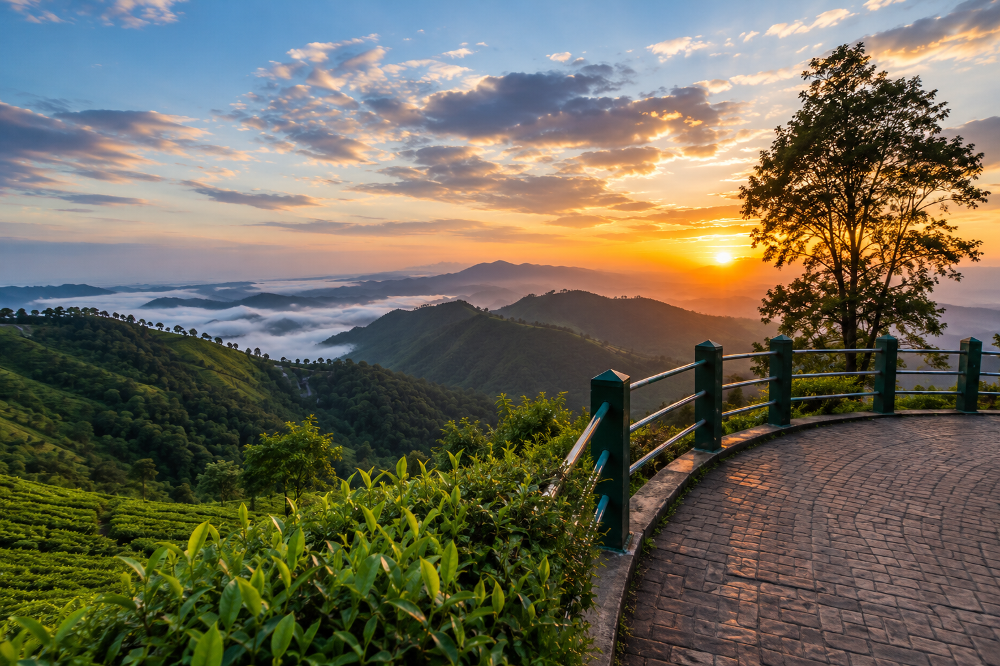
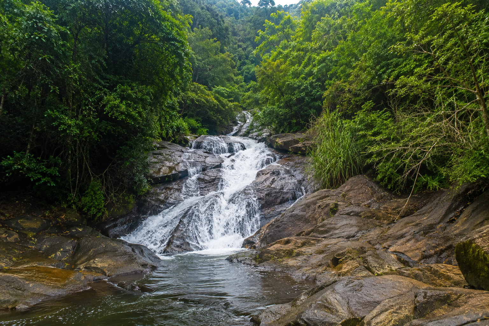
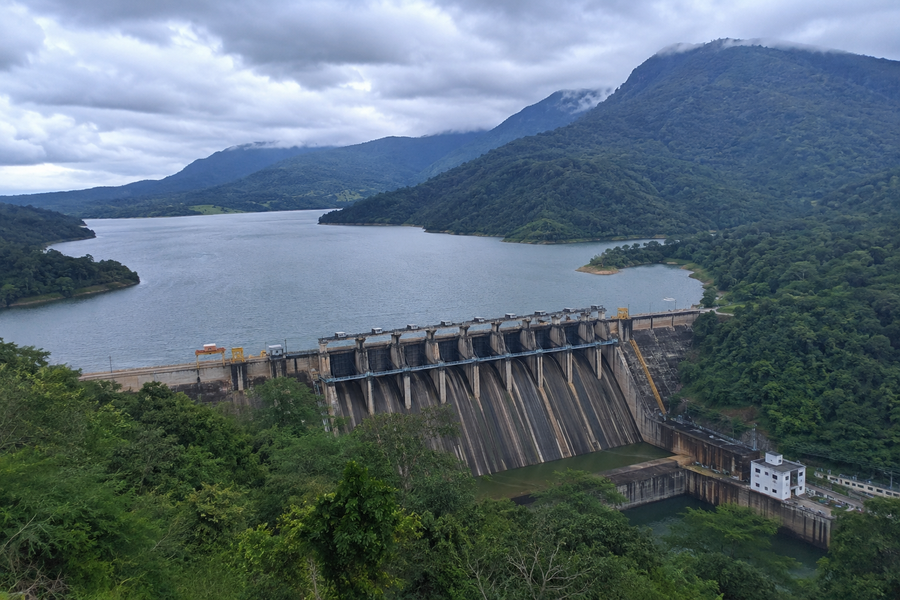

History
Learn about the origin, colonial history and cultural evolution of Valparai.
Learn More →Explore the magnificent tea estates, waterfalls, wildlife, tribal culture, temples, breathtaking viewpoints and travel experiences through one complete digital heritage platform.
Tea Estates
Tourist Spots
Wildlife Species
Feet Elevation
Explore the history, tea estates, wildlife, waterfalls, viewpoints, temples, tribal culture and travel information of Valparai through our carefully organized categories.
Learn about the origin, colonial history and cultural evolution of Valparai.
Learn More →Visit the beautiful tea plantations that made Valparai world famous.
Learn More →Discover scenic viewpoints, waterfalls and hidden attractions.
Learn More →Explore the rich biodiversity and wildlife of the Anamalai Tiger Reserve.
Learn More →Discover the famous temples and spiritual heritage across Valparai.
Learn More →Learn about the traditions, customs and lifestyle of indigenous communities.
Learn More →Browse beautiful photographs of nature, wildlife, tea estates and landscapes.
Learn More →Find routes, accommodation, weather information and travel tips before your visit.
Learn More →Valparai is one of Tamil Nadu's most beautiful hill stations, located in the Anamalai Hills of the Western Ghats. Famous for its vast tea plantations, dense forests, waterfalls and cool climate, it attracts nature lovers, wildlife enthusiasts and photographers throughout the year.
Valparai Heritage Hub brings together history, tourism, wildlife, tea estates, temples, tribal culture, travel guidance and local heritage into one complete digital knowledge platform for everyone.

Valparai offers breathtaking landscapes, rich wildlife, peaceful tea estates and unforgettable travel experiences throughout every season.
Walk through endless green tea plantations and enjoy the refreshing climate of the Western Ghats.
Meet elephants, lion-tailed macaques, gaurs, hornbills and many rare species in their natural habitat.
Visit Monkey Falls, Chinnakallar and many hidden waterfalls surrounded by evergreen forests.
Enjoy sunrise, sunset and panoramic mountain views from famous viewpoints across Valparai.
Explore ancient temples and discover the cultural and spiritual heritage of the region.
Capture mist-covered hills, wildlife, waterfalls and tea gardens all year round.
Explore the latest attractions, unforgettable experiences, scenic destinations and travel opportunities waiting for you in the beautiful hill station of Valparai.
Experience breathtaking sunrise and sunset views from Nallamudi Poonjolai, Loam's View Point and many other panoramic locations.
Explore →Walk through lush green tea gardens and learn about traditional tea cultivation and processing methods.
Explore →Capture waterfalls, wildlife, tea estates, mist-covered mountains and unforgettable landscapes.
Explore →Plan your journey with route information, travel tips, accommodation details and visitor guidance.
Explore →Discover elephants, lion-tailed macaques, hornbills and the rich biodiversity of the Anamalai Tiger Reserve.
Explore →Enjoy responsible tourism while protecting nature, wildlife and the unique heritage of Valparai.
Explore →Discover the breathtaking beauty of Valparai through our carefully selected collection of tea estates, waterfalls, wildlife, viewpoints and unforgettable natural landscapes.


Discover some interesting facts and figures that make Valparai one of the most beautiful hill stations in Tamil Nadu.
Tea Estates
Tourist Attractions
Wildlife Species
Elevation (Feet)
Rainy Days / Year
Photography Locations
Explore the most beautiful destinations in Valparai, from breathtaking viewpoints to waterfalls, dams, tea estates and wildlife hotspots.

One of the most spectacular panoramic viewpoints offering breathtaking mountain scenery.
Explore More →
One of the most popular waterfalls located on the Pollachi–Valparai route.
Explore More →
One of the deepest reservoirs in Asia, surrounded by evergreen forests.
Explore More →
Famous for its winding hairpin bends and breathtaking valley views.
Explore More →
One of the wettest places in India, surrounded by lush rainforest.
Explore More →
A protected ecological paradise with rolling grasslands and magnificent mountain landscapes.
Explore More →Thousands of visitors fall in love with the beauty, peaceful atmosphere and unforgettable experiences offered by Valparai.
"Valparai is one of the most peaceful hill stations I have ever visited. Tea estates and waterfalls were simply breathtaking."
"A perfect destination for wildlife lovers and photographers. Every corner is beautiful."
"The Valparai Heritage Hub website made planning my trip very easy. Highly recommended."
Valparai can be visited throughout the year. The monsoon and winter seasons are especially popular.
Yes. It is one of the safest and most peaceful hill stations for families.
Yes. Visitors often spot elephants, gaur, lion-tailed macaques, hornbills and many bird species.
The Pollachi–Valparai road is famous for its 40 scenic hairpin bends.
Discover mist-covered mountains, endless tea estates, majestic waterfalls, rich wildlife, ancient temples, breathtaking viewpoints and unforgettable travel experiences through the complete Valparai Heritage Hub.